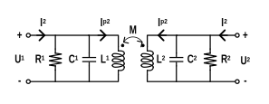

变压器是射频集成电路设计中极为重要的元件，它可以提供：
初级线圈和次级线圈的直流阻断
初级线圈的次级线圈的中心抽头是虚地，可用于连接直流偏置
阻抗匹配
在毫米波频段，其占用面积小，可实现的插入损耗、带宽相比于分立元件有较大优势。变压器的分析通常使用电感耦合的RLC谐振网络进行。

本文复现了两篇论文对变压器$Z_{21}$的分析、推导。
Haikun Jia的推导 Jia推导的核心在于直接列写KCL、KVL方程。
之后直接求解
1 2 3 4 5 6 7 8 9 10 11 12 13 14 15 16 17 18 19 20 21 clear syms R1 L1 C1 R2 L2 C2 M s syms V1 V2 Ip1 Ip2 Iin syms A b x A = [0 , 1 , -s * M, -s * L2; 1 , 0 , -s * L1, -s * M; 0 , (s * C2 + 1 / R2), 0 , 1 ; (s * C1 + 1 / R1), 0 , 1 , 0 ]; b = [0 ; 0 ; 0 ; Iin]; x = A\b; x = x(2 ) / Iin
结果为
1 2 3 x = (M*R1*R2*s)/(R1*R2 - M^2*s^2 + L1*R2*s + L2*R1*s + L1*L2*s^2 - C1*M^2*R1*s^3 - C2*M^2*R2*s^3 + C1*L1*L2*R1*s^3 + C2*L1*L2*R2*s^3 + C1*L1*R1*R2*s^2 + C2*L2*R1*R2*s^2 - C1*C2*M^2*R1*R2*s^4 + C1*C2*L1*L2*R1*R2*s^4)
手动整理后可得
可以利用公式将$M, L, C, R$转换为$k, \omega, R, Q$，相应的公式为：
于是，在Matlab中输入命令
1 2 3 4 5 6 7 syms Q1 Q2 w1 w2 k x = subs(x, M, sqrt (L1 * L2) * k); x = subs(x, L1, R1 / w1 / Q1); x = subs(x, L2, R2 / w2 / Q2); x = subs(x, C1, Q1 / w1 / R1); x = subs(x, C2, Q2 / w2 / R2)
可以得到推导结果
1 2 3 x = (R1*R2*k*s*((R1*R2)/(Q1*Q2*w1*w2))^(1/2))/(R1*R2 + (R1*R2*s^2)/w1^2 + (R1*R2*s^2)/w2^2 + (R1*R2*s^4)/(w1^2*w2^2) + (R1*R2*s)/(Q1*w1) + (R1*R2*s)/(Q2*w2) + (R1*R2*s^3)/(Q1*w1*w2^2) + (R1*R2*s^3)/(Q2*w1^2*w2) - (R1*R2*k^2*s^4)/(w1^2*w2^2) + (R1*R2*s^2)/(Q1*Q2*w1*w2) - (R1*R2*k^2*s^3)/(Q1*w1*w2^2) - (R1*R2*k^2*s^3)/(Q2*w1^2*w2) - (R1*R2*k^2*s^2)/(Q1*Q2*w1*w2))
手动整理，将$R_1R_2$移到分母，将移到$\omega_1^2\omega_2^2$分子，可得
进一步假设高Q值，$Q_1Q_2(\omega_1^2+\omega_2^2)\gg(1-k^2)\omega_1\omega_2$，可解得极点为
得到了文章中的公式。此外，可以进一步简化，使初级、次级的$\omega, Q, R$对应相等，利用
1 2 3 4 5 6 7 8 syms Q w R x = subs(x, Q1, Q); x = subs(x, Q2, Q); x = subs(x, w1, w); x = subs(x, w2, w); x = subs(x, R1, R); x = subs(x, R2, R); x = simplify(x)
得到
1 2 3 x = (Q^2*k*s*w^4*(R^2/(Q^2*w^2))^(1/2))/(- Q^2*k^2*s^4 + Q^2*s^4 + 2*Q^2*s^2*w^2 + Q^2*w^4 - 2*Q*k^2*s^3*w + 2*Q*s^3*w + 2*Q*s*w^3 - k^2*s^2*w^2 + s^2*w^2)
即
极点频率可以由
得到，即
进一步假设高Q值，$2Q^2\gg1-k^2$，可解得
Marco Vigilante的推导 Marco巧妙地利用了Y参数，避免了很多的复杂计算。变压器方程为
变换后为
因此得到了Y参数。取$s=j\omega, L=L_1=L_2, M=kL$，有
此时，加上两侧的电容，电阻，并令
可以得到整体Y参数为
此时，对Y参数矩阵求逆
1 2 3 4 5 6 7 clear syms R Q w s k syms Y Y = [1 / R * (1 + Q * (s / w + w / s)), -k * w * Q / s / R; -k * w * Q / s / R, 1 / R * (1 + Q * (s / w + w / s))]; x = eye (2 )/Y; x(2 ,1 )
得到结果
1 2 3 ans = (Q*R*k*s*w^3)/(- Q^2*k^2*w^4 + Q^2*s^4 + 2*Q^2*s^2*w^2 + Q^2*w^4 + 2*Q*s^3*w + 2*Q*s*w^3 + s^2*w^2)
手动整理可得
总结 使用两种方法都能够推导出变压器$Z_{21}$的表达式，仔细观察两者简化后的表达式分母虽然一致，分子却有所区别，这是因为两者定义$Q, \omega$的方式不尽相同。尽管如此，这两种方法都可以进一步推导出两个极点的位置，用于指导变压器的宽带设计。
附录 针对Haikun Jia的Mathematica推导 1 2 3 4 5 6 7 8 9 10 11 12 13 14 15 16 17 18 19 20 21 22 23 24 25 26 27 28 29 30 31 result = Solve [s L1 Ip1 + s M Ip2 == U1 && s M Ip1 + s L2 Ip2 == U2 && I1 - s C1 U1 - U1/R1 == Ip1 && -s C2 U2 - U2/R2 == Ip2, {U1, U2, Ip1, Ip2}]; Zt = U2/I1 /. result[[1 ]] -((M R1 R2 s)/(-R1 R2 - L2 R1 s - L1 R2 s - L1 L2 s^2 + M^2 s^2 - C1 L1 R1 R2 s^2 - C2 L2 R1 R2 s^2 - C1 L1 L2 R1 s^3 + C1 M^2 R1 s^3 - C2 L1 L2 R2 s^3 + C2 M^2 R2 s^3 - C1 C2 L1 L2 R1 R2 s^4 + C1 C2 M^2 R1 R2 s^4 )) Zt2 = Simplify [Zt /. M -> k Sqrt [L1 L2] /. {L1 -> R1/w1/Q1, L2 -> R2/w2/Q2, C1 -> Q1/w1/R1, C2 -> Q2/w2/R2}] (k R1 R2 s w1 w2)/(Sqrt [(R1 R2)/( Q1 Q2 w1 w2)] (s w1 (-(-1 + k^2 ) s w2 + Q2 (s^2 - k^2 s^2 + w2^2 )) + Q1 (s (-(-1 + k^2 ) s^2 + w1^2 ) w2 + Q2 (-(-1 + k^2 ) s^4 + w1^2 w2^2 + s^2 (w1^2 + w2^2 ))))) Zt3 = Simplify [Zt2 /. {L1->L, L2->L, w1->w, w2->w, Q1->Q, Q2->Q, R1->R, R2->R},{R>0 ,Q>0 ,w>0 }] (k R s w^2 )/(-2 (-1 + k^2 ) s^3 - ((-1 + k^2 ) Q s^4 )/w + ((1 - k^2 + 2 Q^2 ) s^2 w)/Q + 2 s w^2 + Q w^3 ) Collect [Denominator [Zt2]/Sqrt [((R1 R2)/(Q1 Q2 w1 w2))], s]Solve [(1 - k^2 ) Q1 Q2 s^4 + s^2 (Q1 Q2 (w1^2 + w2^2 )) + Q1 Q2 w1^2 w2^2 == 0 , s]
参考
H. Jia, C. C. Prawoto, B. Chi, Z. Wang and C. P. Yue, "A Full Ka-Band Power Amplifier With 32.9% PAE and 15.3-dBm Power in 65-nm CMOS," in IEEE Transactions on Circuits and Systems I: Regular Papers , vol. 65, no. 9, pp. 2657-2668, Sept. 2018. DOI: 10.1109/TCSI.2018.2799983
M. Vigilante, P. Reynaert, 5G and E-Band Communication Circuits in Deep-Scaled CMOS. Switzerland: Springer, 2018. DOI: 10.1007/978-3-319-72646-5